es el protagonista de BioShock, al cual se controla a lo largo del juego. Antes de su llegada a Rapture, viajaba como pasajero en un avión que se estrelló cerca de un faro, que proporcionaba acceso a la ciudad submarina. Durante su viaje a través de Rapture, encuentra una serie de sustancias modificadoras de genes, conocidas como plásmidos, que utiliza para fortalecerse y protegerse a sí mismo. De acuerdo con el pasaporte que lleva a bordo en el avión, su nombre completo es Jack Wynand.
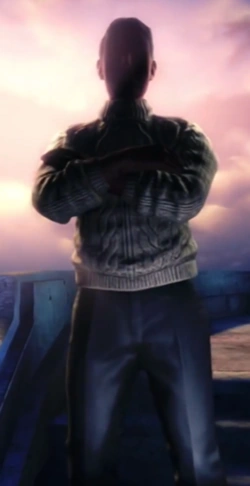
Andrew Ryan es el fundador de Rapture y el dueño de Industrias Ryan. Él es el antagonista principal en la mayor de parte en BioShock. Sólo aparece en persona en el nivel Control Central. Concibió la ciudad como un lugar donde las mejores mentes trabajaran sin la interferencia del gobierno por su interés personal sin constricciones morales, sociales o legales.
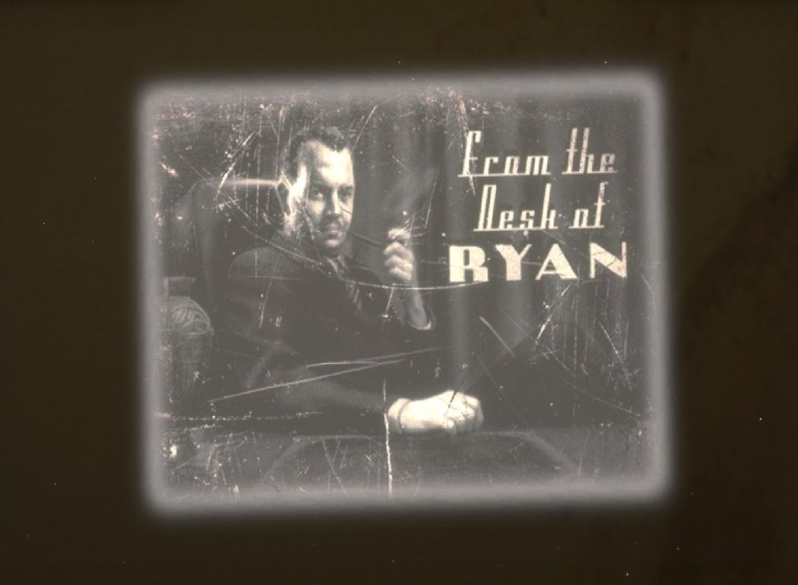
El personaje de Atlas es un civil que habla con un fuerte acento irlandés -para ser exactos, uno asociado a la clase obrera de Dublín-. Está en la estación de batisferas esperando a Jack (supuestamente), pero uno de sus socios es asesinado por una splicer araña, por lo que Atlas huye.
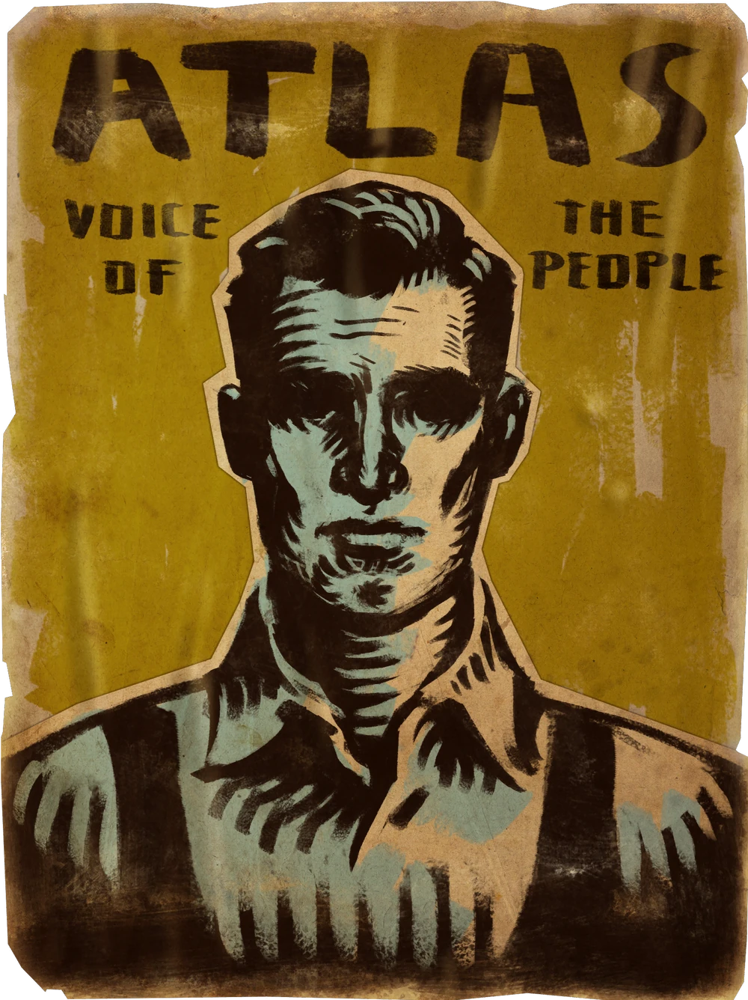
Sander Cohen fue un artista (poeta, compositor, escultor y dramaturgo) que influyó mucho en la ciudad de Rapture, así como en otras urbes. Cohen se convirtió en una figura destacada dentro de la comunidad artística de Rapture. Fue el encargado de componer el himno de la ciudad, y diseñar las máscaras para el festival de baile de fin de año de 1958
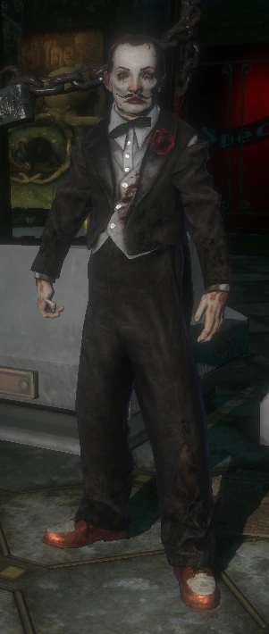
Frank Fontaine es uno de los principales antagonistas en BioShock. Se le conoce por ser un estafador, una mente maestra del crimen, el archienemigo de Andrew Ryan y el líder de la oposición en la lucha por el poder que llevó a Rapture al colapso.
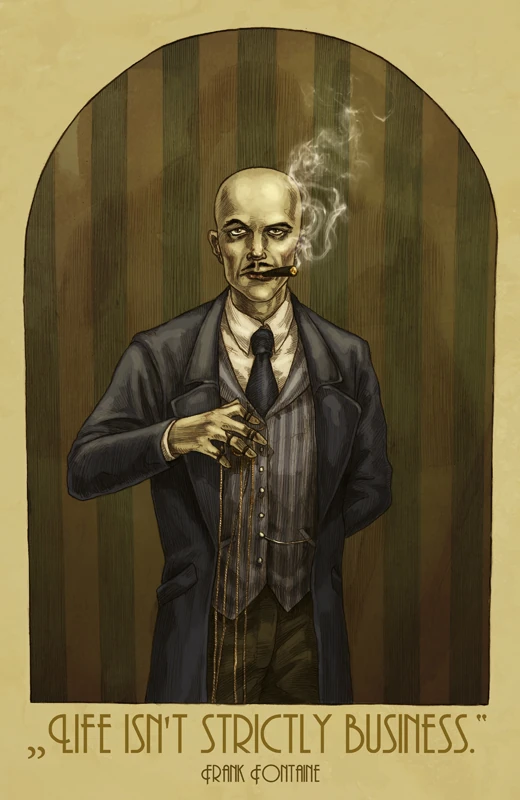
La doctora Brigid Tenenbaum es una científica que ayudó en la investigación y producción del ADAM tras descubirlo en una babosa marina. También es la "madre" de las Little Sisters: ella las creó al desarrollar el proceso de implantación en niñas pequeñas y se preocupa mucho por su seguridad, llamándolas "sus pequeñas" y actuando como una madre para su protección.
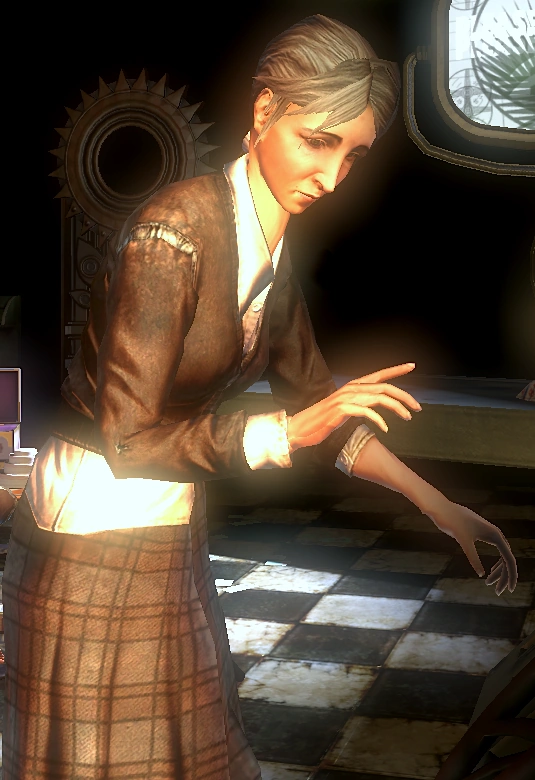
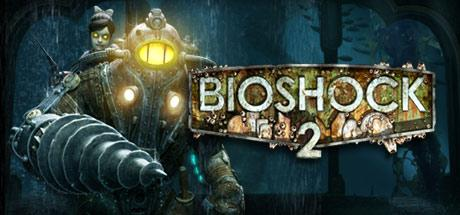
El sujeto Delta (símbolo: Δ y conocido como el Primer Big Daddy o el Big Daddy Prototipo) es el protagonista de BioShock 2. Delta fue el primer Big Daddy de la Serie Alfa exitosamente vinculado a una Little Sister. Tiene un símbolo de delta en su traje, que es la cuarta letra del alfabeto griego, significando que Delta fue el cuarto sujeto de prueba contado tomado de Persephone para la conversión de la Serie alfa en Fontaine Futuristics.
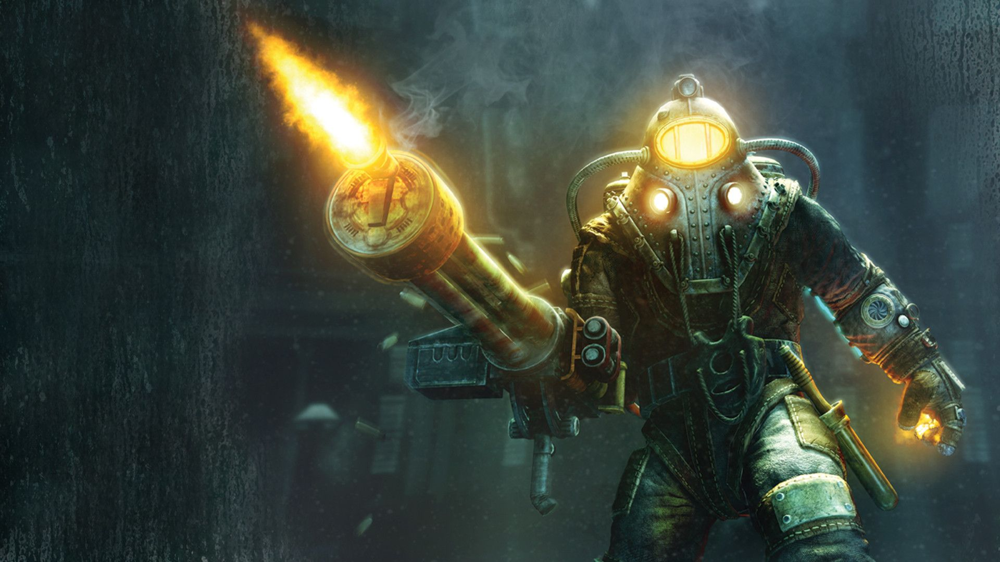
Sofia Lamb es una psiquiatra clínica por la Universidad de Oxford y la principal antagonista de BioShock 2. Asumió el papel de Andrew Ryan después de los hechos de BioShock, pero con una visión ideológica diferente.
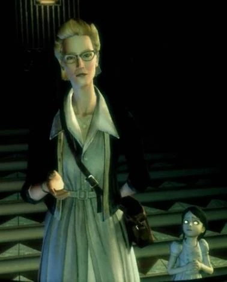
Eleanor Lamb es uno de los personajes de BioShock 2. Ella fue una de las primeras Little Sisters en llevar consigo un Big Daddy, el llamado Sujeto Delta. Esto ocurre en el año 1958, cuando Eleanor tenía seis años. Eleanor aún recuerda a Delta después de diez años y sabe que él la está buscando.
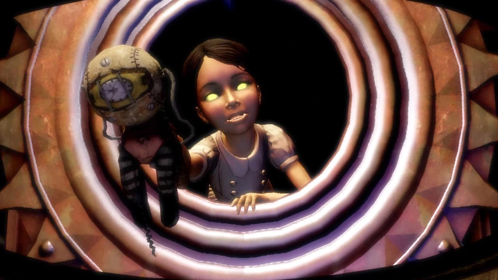
Augustus Sinclair fue una de las figuras clave en la comunidad científica de Rapture, así como un importante hombre de negocios. Su negocio, llamado Sinclair Solutions, fue una de las más importantes empresas de investigación de plásmidos en Rapture. Además es un personaje importante en BioShock 2, donde guía al sujeto Delta.
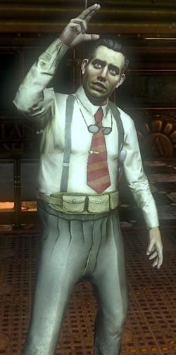
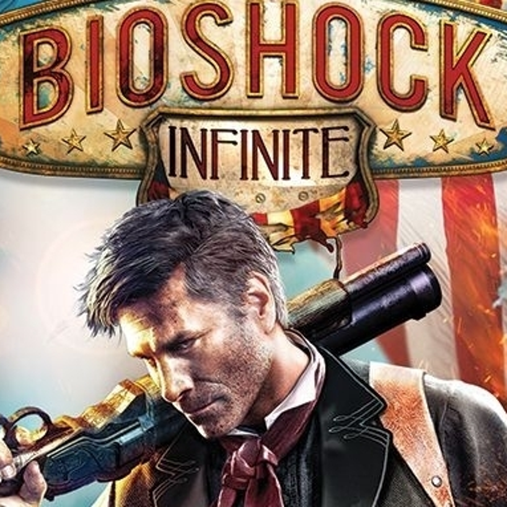
Booker DeWitt es el protagonista de BioShock Infinite, a quien el jugador controla a lo largo del juego. Booker es un investigador privado y, antes de su reciente llegada en Columbia, un ex agente de Pinkerton.
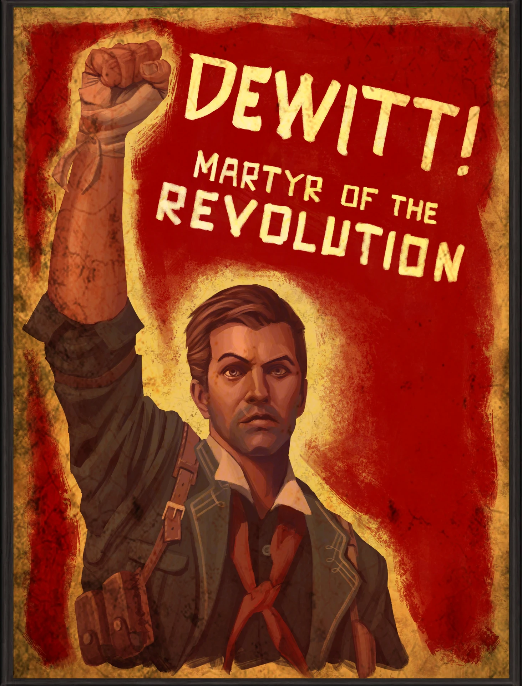
Elizabeth es una mujer de 19 años que ha estado prisionera en Columbia desde que era una niña. Booker DeWitt, el protagonista de BioShock Infinite, es enviado para rescatarla de la ciudad flotante por los Lutece y llevarla de nuevo a Nueva York.
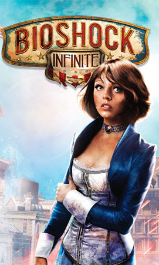
Zachary Hale Comstock es un personaje de BioShock Infinite. Es el líder de los Fundadores, el partido ultra-nacionalista que fundó la ciudad flotante de Columbia. Los Fundadores se encuentran en una guerra civil con la facción de Vox Populi por el control de la ciudad
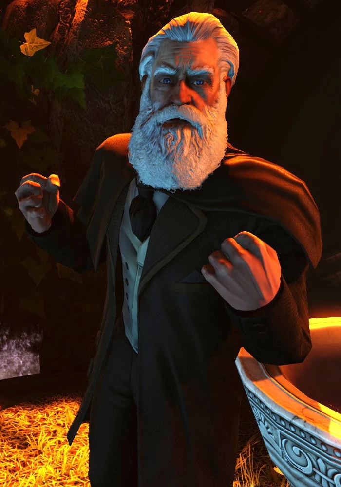
Songbird es un personaje de BioShock Infinite. Es un pájaro antropomórfico de gran tamaño que es el carcelero de Elizabeth y se encarga de protegerla de cualquier enemigo. Al igual que los Big Daddies, sus ojos cambian de color para indicar su estado: verde para indicar amistosidad, naranja para vigía y rojo para enemistad.
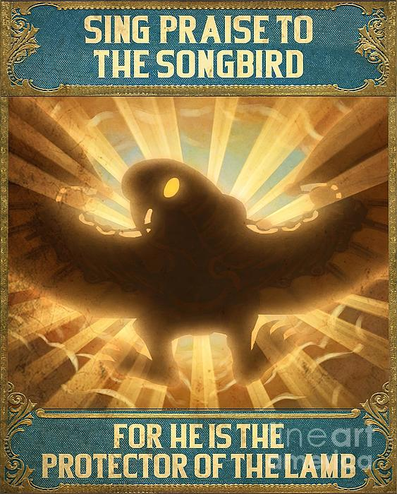
>
Fitzoy llegó a Columbia como parte del grupo de personas que Fink trajo para realizar trabajos. Ella fue enviada a trabajar de sirvienta de lady Comstock, a quien admiraba. Tras la muerte de esta, se pensó que había sido la asesina, pero en realidad fue Zachary Comstock quien la asesinó y culpó a Daisy, quien huyó y creó Vox Populi semanas después.
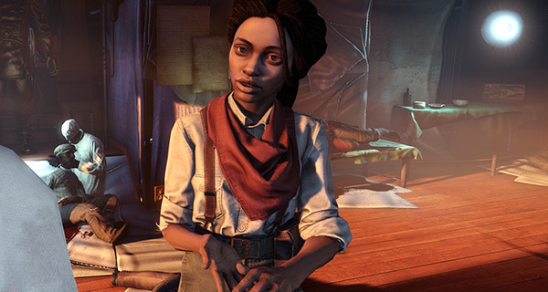